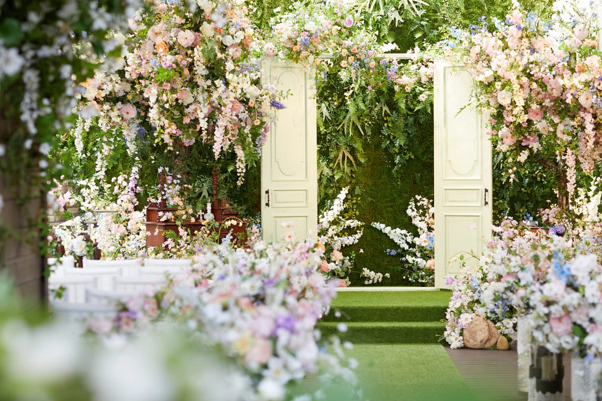
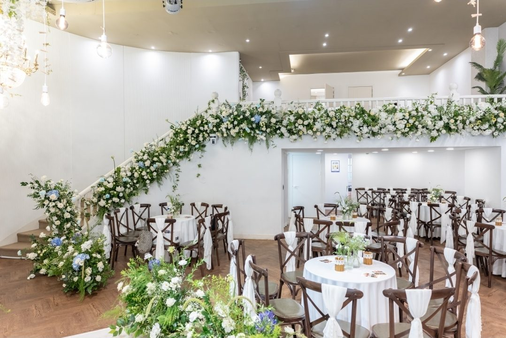
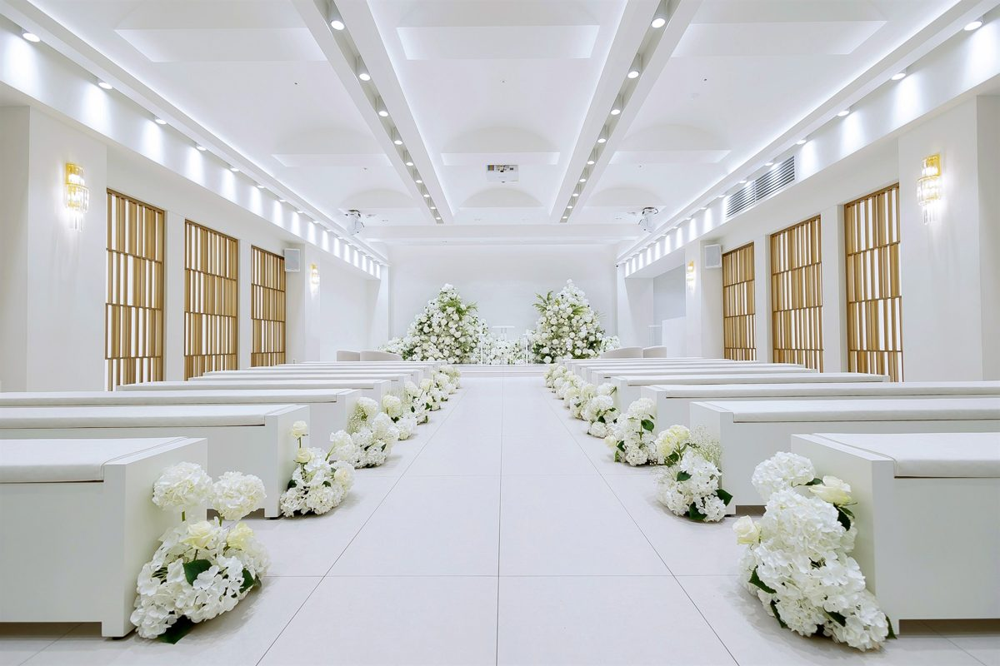
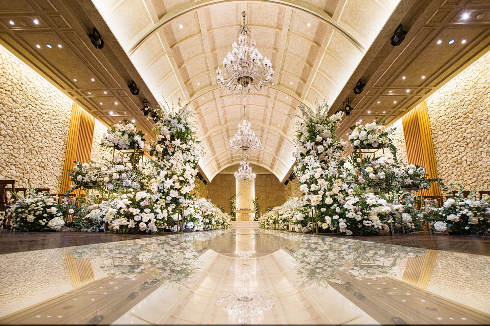

후기 요약은 2024년 이후 네이버·카카오맵 리뷰와 웨딩킹 카페 후기 중 홍보글을 뺀 실후기만 읽고 쓴 것이에요.

사진: 네이버 플레이스 업체 사진
강남구 역삼동 · 하우스웨딩
아모르하우스
1위 · 76점
예상 총액 (200명·정가)
1,650만대관 200만 + 웨딩 디렉팅 50만 + 식대 7만 × 200명 · 선택: 생화 연출 추가 280만, 풍선이벤트 20만
가까운 역
역삼역 485m직선거리
최소 보증
100명후기 기준
본식을 치른 커플들은 꽃 장식이 예쁜 하우스웨딩 분위기, 직접 만드는 맛있는 뷔페, 한 팀만 쓰는 긴 대관 시간을 칭찬해요. 역삼역 근처인데 가격이 합리적이라는 말도 있어요. 다만 메뉴 가짓수가 많지 않고, 신부대기실과 식사 공간이 아담한 편이에요.
꽃 장식이 예쁜 하우스웨딩 분위기
직접 만드는 뷔페가 맛있음(갈비, 한식, 디저트)
한 타임 한 팀, 긴 대관 시간, 파티 같은 분위기
뷔페 메뉴 가짓수가 적고 식사 공간이 좁은 편
신부대기실이 작고 드레스 입고 계단으로 내려와야 함
축의대 자리와 화장실이 적음
후기를 읽고 매긴 점수 4.5 · 카카오맵 4.0 (2명) · 2024년 이후 기준
확인할 것 신부대기실이 작고 2층 계단으로 내려와요. 하객 수가 100~200명인지, 축의대 자리는 넉넉한지 확인해요.
예약 전화 02-562-6936이나 카카오톡 채널 아모르하우스로 상담을 잡아요. 가격은 홈페이지에 나와 있어요.
항목별 점수
가격
위치
평점
후기 수
최소 보증
비수기 할인
음식
실후기 8건(카카오 2 · 네이버 0 · 웨딩킹 6)으로 정리했어요. 홍보글 3건은 뺐어요. 주된 이유: 후기를 쓰면 서비스를 준다는 글, 상담 유도 링크, 화환 배달 광고

사진: 네이버 플레이스 업체 사진
강남구 역삼동 · 하우스웨딩
메리스에이프럴
2위 · 75점
예상 총액 (200명·정가)
2,150만대관 300만 + 꽃장식 및 기타 부대비용 450만 + 식대 7만 × 200명
가까운 역
신논현역 406m직선거리
최소 보증
60~150명후기 기준
생화 장식과 꽃향기, 3시간 반 단독 대관, 엽서 이벤트와 포토부스가 가장 많이 칭찬받아요. 발렛과 셔틀 덕에 언덕길 부담이 줄고, 소규모와 국제결혼 커플의 만족이 높아요. 음식은 맛있었다는 말이 많지만, 가짓수가 적다는 말과 맛없었다는 하객 후기도 몇 건 있어요.
생화 장식과 꽃향기, 하객 꽃다발 선물
대표 직접 상담, 친절한 응대
엽서 행잉 이벤트, 포토부스 같은 하객 참여 이벤트
역에서 오르막 언덕길
계약 전에 시식을 못 함
하객이 150명을 넘으면 홀과 연회장이 붐빔
후기를 읽고 매긴 점수 4.5 · 카카오맵 4.9 (263명) · 네이버 5.0 (17명) · 2024년 이후 기준
확인할 것 계약 전에 시식이 안 되고, 역에서 걸어오면 오르막이에요. 하객이 많으면 1층 좌석과 축의대가 좁으니 인원을 먼저 따져 보세요. 후기를 쓰면 할인해 준다는 지적도 있어서 별점은 조금 감안해서 보세요.
예약 전화 02-514-3676이나 네이버 예약으로 상담을 잡아요. 카톡으로도 문의할 수 있고, 해외에 살면 줌 상담도 돼요.
항목별 점수
가격
위치
평점
후기 수
최소 보증
비수기 할인
음식
실후기 422건(카카오 263 · 네이버 155 · 웨딩킹 4)으로 정리했어요. 홍보글 105건은 뺐어요. 주된 이유: '강남 하우스웨딩홀' 키워드와 해시태그를 반복하거나 발렛·셔틀 혜택을 받으려는 후기 이벤트 글이 대부분이에요.

사진: 오드힐하우스 홈페이지
서초구 방배동 · 단독홀
오드힐하우스
3위 · 64점
예상 총액 (200명·정가)
3,150만대관 1,200만 + 포토테이블 30만 + 플라워샤워 20만 + 식대 9.5만 × 200명 · 선택: 연주 60만, 전문사회 40만
가까운 역
방배역 301m직선거리
최소 보증
100명후기 기준
후기 대부분은 완공 전에 조감도만 보고 계약한 커플 글이에요. 이 커플들은 한 타임에 한 팀만 쓰는 단독홀과 2시간 간격, 밝은 화이트홀, 방배역에서 가까운 위치, 맛있는 뷔페를 가장 많이 칭찬해요. 다만 홀이 150석 정도로 작은 편이에요. 본식에 다녀온 하객 중에는 2층 식당이 붐벼 식사 시간이 짧았다는 후기가 있고, 실물이 조감도와 달라 계약을 취소한 후기도 있어요.
한 타임에 한 팀만 쓰는 단독홀, 2시간 간격이라 여유로움
밝은 화이트톤과 그리너리 인테리어, 사진이 잘 나옴
친절하고 꼼꼼한 상담, 당일 계약을 밀어붙이지 않음
완공 전에 조감도만 보고 계약해야 해서 불안함, 실물이 조감도와 다르다는 후기
홀과 버진로드가 작은 편이라 100~150명 규모에 맞음
등받이 없는 의자가 어르신께 불편할 수 있음
후기를 읽고 매긴 점수 4.2 · 카카오맵 4.8 (24명) · 네이버 5.0 (7명) · 2024년 이후 기준
확인할 것 글을 여러 개 쓰면 할인해 주는 혜택이 있었어서 칭찬 후기가 부풀려졌을 수 있어요. 하객이 많으면 식당이 얼마나 붐비는지, 실제 식사 시간이 얼마나 되는지 꼭 물어봐요. 등받이 없는 의자와 홀 크기는 직접 가서 봐요.
예약 네이버 예약으로 상담을 잡거나 전화 0507-1410-5038로 문의해요. 카톡 채널 @오드힐하우스도 있어요.
항목별 점수
가격
위치
평점
후기 수
최소 보증
비수기 할인
음식
실후기 86건(카카오 24 · 네이버 52 · 웨딩킹 10)으로 정리했어요. 홍보글 59건은 뺐어요. 주된 이유: 7~8월에 거의 매일 올라온 판박이 네이버 리뷰, 키워드 반복 카페글, 글쓰기 할인 후기

사진: 네이버 플레이스 업체 사진
성남시 분당구 판교 · 채플홀·그레이스홀
W스퀘어컨벤션 ★
4위 · 59점
예상 총액 (200명·정가)
2,195만대관 700만 + 지정 본식스냅·원판 100만 + 지정 본식스냅 원본 15만 + 식대 6.9만 × 200명
가까운 역
판교역 669m직선거리
최소 보증
150명후기 기준
하객과 계약 커플 모두 뷔페가 맛있다는 말을 가장 많이 해요. 단독 건물이라 주차장이 넓고 판교역과 가까우며, 생화로 꾸민 채플홀과 8층 야외정원이 예쁘다는 후기가 많아요. 다만 후기 대부분이 2024년 2~6월에 몰려 있고, 그 뒤에 올라온 후기는 거의 없어요.
뷔페 음식이 맛있고 종류가 많음
홀이 예쁘고 생화 장식이 화려함
단독 건물이라 주차장이 넓고 무료 시간이 넉넉함
주말 피크에 건물 주차장이 차서 건너편으로 안내받음
원하는 날짜·시간대가 이미 마감됨
날짜별 할인이 적고 본식스냅이 별도라 견적이 높게 느껴짐
후기를 읽고 매긴 점수 4.2 · 2024년 이후 기준
확인할 것 인기 있는 날짜와 시간대가 빨리 마감된다는 후기가 있어서 상담을 일찍 잡는 게 좋아요. 하객이 몰리는 시간에는 주차장이 잠깐 붐비고 일부 음식이 비기도 한다니, 예식 시간대를 고를 때 참고해요. 최근 후기가 적으니 지금 식대와 메뉴는 상담할 때 직접 확인해요.
예약 전화 031-703-0116이나 카카오톡 채널 W스퀘어컨벤션으로 상담을 잡아요. 홈페이지는 w-square.kr이에요.